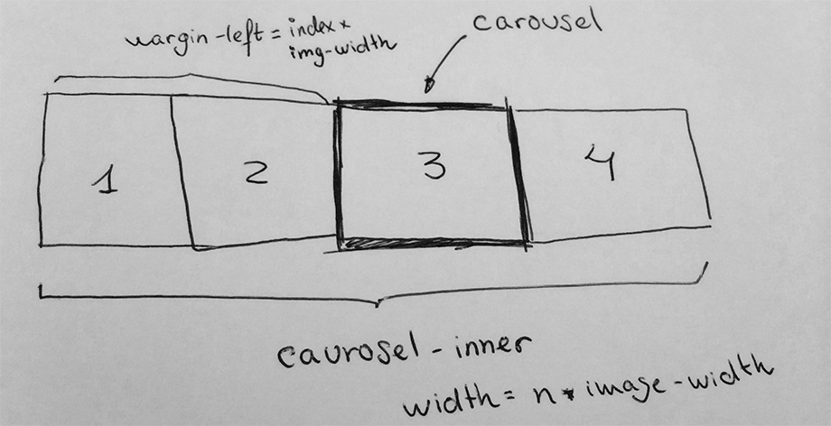

jQuery es una librería que permite manipular el DOM, manejar eventos, crear animaciones y realizar peticiones Ajax. Todo esto funcionando en multitud de navegadores. Una de las razones por las que jQuery es tan popular es por la cantidad de plugins que tiene.
Hace un par de años hubo una batalla entre librerías que ofrecian este tipo de funcionalidades: jQuery, Mootols, Prototype. jQuery fue el claro vencedor de la batalla, siendo el más utilizado en la actualidad. Es tán utilizado que un estudio dice que el 50% de las webs utilizan jQuery. Y lo que es más sorprendente, el 88.3% de las webs que utilizan JavaScript utilizan jQuery. Esto explica algunos memes que han aparecido como "you should definitely use jQuery".
{kind=link}
La principal ventaja de utilizar jQuery es el soporte multinavegador. Si estamos trabajando en una aplicación que trabaja con el DOM es conveniente utilizar jQuery porque nos ahorra muchos problemas de compatibilidad entre distintos navegadores. jQuery soporta la mayoría de navegadores incluso navegadores obsoletos como IE6. A partir de la versión 2 van a dejar de dar soporte a IE6, 7, 8 en un intento de hacer la librería más ligera y forzar a que la gente actualice sus navegadores para que la Web pueda evolucionar.
jQuery es una librería bastante pesada. Esto puede suponer un problemas cuando estamos trabajando para dispositivos móviles en los que la conexión puede que no sea rápida. Si esto supone un problema existen alternativas como zepto.js, una librería que con una API compatible pero más ligera.
La versión con la que vamos a trabajar en el curso es la 1.9.1. Para incluir la librería en la web podemos utilizar utilizando un CDN, por ejemplo el de google, o directamente utilizando una versión local.
<script src="//ajax.googleapis.com/ajax/libs/jquery/1.9.1/jquery.min.js"></script>
<script src="/libs/jquery.min.js"></script>
En el caso de utilizar una versión local, es recomendable utilizar un gestor de paquetes, como por ejemplo bower.
$
Todos los métodos de jQuery están expuestos a través del objeto jQuery. Este objeto a su vez tiene un alias con $. Esto es un claro ejemplo del uso del patrón Facade.
// Código equivalente
jQuery('.title h1');
$('.title h1');
Existen otras librerías como Mootols que también utilizan $ para encapsular sus métodos. Mezclar estas dos librerías no es una muy buena idea, pero hay veces en las que es inevitable. En esos casos es necesario utilizar la función noConflict.
<script src="other$lib.js"></script>
<script src="jquery.js"></script>
<script>
$.noConflict();
$ // $ === other lib
jQuery('.title h1');
(function ($) {
$('.title h1'); // $ == jQuery
})(jQuery);
</script>
El uso básico de la librería consiste en utilizar un selector para seleccionar varios elementos y luego aplicar una acción sobre los elementos seleccionados.
$('#content').show();
$('.menu li').addClass("active");
También existen algunas funciones que no se aplican a una selección de elementos del DOM.
$.get('/tweets');
Pasar una función como parámetro es equivalente a añadir un listener al evento document.ready.
$(function () {
// document ready code
});
//similar a
$(document).ready(function () {
});
El evento document.ready es importante porque no puedes modificar un elemento del DOM si todavía no se ha parseado. Este código no va a funcionar porque el div con clase important todavía no se ha definido cuando se ejecuta el JavaScript.
<script>
$(".important").text("Important text");
</script>
<div class="importat"></div>
Para solucionar podemos añadir un listener al evento document.ready que se lanza cuando el DOM se ha cargado completamente. Este código si funciona.
<script>
$(function () {
$(".important").text("Important text");
});
</script>
<div class="importat"></div>
Otra solución mucho mas sencilla y eficiente hubiera sido poner el bloque de script debajo del div, para que del div.important ya estuviera definido. Esta es una de las razones por las que se recomienda colocar el código JavaScript al final de la página.
<div class="importat"></div>
<script>
$(".important").text("Important text");
</script>
Selectores
jQuery utiliza la sintaxis de CSS para seleccionar elementos del DOM.
$("#content");
$(".container");
$("ul li.active");
$("ul > li");
$("ul li:first-child");
Además de los selectores compatibles con CSS, jQuery añade algunos otros selectores
$("li:eq(2)");
$("li:even");
$("li:odd");
Lista completa de los selectores disponibles.
Estos selectores trabajan en el contexto de toda la página. Podemos hacer los selectores más rápidos si reducimos el contexto.
var $content = $('#content');
$('li', $content);
$content.find('li');
Todas las operaciones con el DOM son lentas, cuando trabajes con muchos elementos a la vez puedes empezar a notar retardos. Por eso es importante tratar de reducirlas lo máximo posible. Por ejemplo, podemos tratar de reducir el número de selector que hacemos guardando el resultado en una varaible
for (var i = 0; i < 10000; i++) {
$('#container').html(i);
}
var $container = $('#container');
for (var i = 0; i < 10000; i++) {
$container.html(i);
}
Cuando tengamos dudas de rendimieneto de este tipo y queramos ver qué código es más rapido, podemos utilizar la web jsperf. Por ejemplo en este jsperf se comprueba la velocidad de cachear selectores jQuery.
Los selectores devuelven un objeto sobre el que podemos aplicar acciones para modificar los elementos. También podemos acceder a los elementos del DOM seleccionados.
$("li").hide();
$("li").get(0); // DOM element at 0
$("li")[0]; // DOM element at 1
$("li").eq(1); // jQuery object at 1
Crear elementos
El objeto jQuey también permite crear elementos nuevos
$('<div class="container">New Element</div>').appendTo("body");
Getters & setter
Existen funciones que actuan como getters y setters a la vez. En caso de que no le pases parámetros te devolverá el valor actual. Si le pasas un parámetro asignará ese valor.
$('li').html();
$('li').html('New HTML');
Chaining
jQuery permite encadenar varias llamadas a métodos sobre el mismo selector. De esta forma nos evitamos tener que definir una variable o duplicar el selector.
$('a')
.addClass("btn")
.attr('title', 'Nice link' )
.show();
var $a = $('a')
$a.addClass("btn")
$a.attr('title', 'Nice link' )
$a.show();
Manipulación de elementos
http://api.jquery.com/category/manipulation/
$("a").html("New HTML");
$("a").addClass("className");
$("a").removeClass("className");
$("a").toggleClass("className");
$("input").val()
$("a").attr("href", "http://www.google.com");
$("a").css("font-size", "20px");
$("a").appendTo()
$("a").append()
$("a").remove()
Eventos
Los eventos nos permite hacer aplicaciones que respondan a la acción del usuario. El funcionamiento es registrar una función para que se ejecute cuando se produzca cierto evento.
$a.on("click");
$a.off();
$a.trigger("click");
Los métodos básicos son on añadir un nuevo listener y off para eliminar el listener. Además el método trigger nos permite lanzar eventos. En versiones anteriores de jQuery se utilizaban los métodos bind y unbind pero en las versiones nuvas on y off son los métodos recomendades.
Algunos evenetos que se utilizan normalmente son:
- click
- keydown
- keypress
- keyup
- mouseover
- mouseenter
- mouseleave
- scroll
- focus
- blur
- resize
Diferencias entre keydown y keypress
La funciones que actuan como manejador de eventos reciben como parámetros información acerca del evento que se lanzó.
$a.on("click", function(event) {
event.type // Tipo de evento
event.which // Tecla que se pulsó
event.target // Elemento que lanzó el evento
event.currentTarget // Elemento en el que se seteo el listener
event.pageX // Posición X del ratón
event.pageY // Posición Y del ratón
});
Namespaces
Podemos definir namespaces a nuestros eventos. De forma que sea más fácil referirnos a un grupo de eventos. Por ejemplo para llamar a la función off eliminando únicamente los manejadores que nos interesen.
$a.on('click', handler1);
$a.on('click', handler2);
$a.off('click');
En este caso al llamar a la función off esatmos eliminando los dos manejadores.
$a.on('click.logging', handler1);
$a.on('click.analytics', handler2);
$a.off('click.logging');
En este caso estamos eliminando únicamente los eventos dentro del namespace logging.
El uso de namespaces es muy importante a la hora de diseñar un plugin de jQuery. Tenemos que tener en cuenta que nuestro código va a convivir con código del usuario del plugin y no queremos provocar comportamientos indeseados como eliminarle un listener.
Event delegation and bubling
Cuando un elemento lanza un evento este evento se propaga por todos sus padres hasta llegar a document.
<div>
<h1>
<a href="#">
<span>Click to buble</span>
</a>
</h1>
</div>
El evento click que se lanza al pulsar el enlace se propaga hacia sus padres.
En el caso de que queramos parar esta propagación podemos devolver false en el manejador del evento o llamar al método event.stopPropagation(). Yo prefiero utilizar esta última forma, me parece que es más clara.
La propagación de los eventos nos permite delegar eventos
<ul>
<li>li 1</li>
<li>li 2</li>
<li>li 3</li>
</ul>
$('ul').on('click', 'li', function( event ) {
event.currentTarget
event.target
});
La diferencia es que estamos utilizando el método on con 3 parámetros. Estamos añadiendo el listener al ul y estamos filtrando los eventos que vienen de los elementos li. La principal ventaja de esto es eficiancia: Si tenemos muchos elementos hijos, es más eficiente añadir un único listener en el padre que un listener por cada evento. Además este tipo de eventos son los que en versiones anteriores de javascript se llamaban live porque son capaces de escuchar eventos lanzados por elementos creados dinámica mente.
<a href="#">1</a>
$("a").on("click", function (event) {
// no se llamará con el elemento creado dinámicamente
})
$('body').on('click', 'a', function(event) {
// se llamará con el elemento creado dinámicamente
});
$("body").append("<a href='#'>2</a>");
No debemos confundir el detener la propagación del evento (event.stopPropagation()) con detener la acción por defecto (event.preventDefeault()). Por ejemplo, en el caso un enlace, la acción por defecto es redirigir a la página en cuestión. Un patrón muy habitual es:
<a href="#">Link</a>
$("a").click(function (event) {
event.preventDefault();
});
Ejercicio: Todo list
En este ejercicio vamos a crear una aplicación de lista de tareas. Las funcionalidades básicas que debe tener son:
- Añadir una nueva tarea
- Marcar una tarea como terminada
- Editar una tarea
- Eliminar una tarea
Efectos
jQuery provee una api para hacer animar elementos. Tenemos que tener en cuenta que estas animaciones son animaciones JavaScript y no animaciones CSS. Las animaciones JavaScript básicamente es como si modificaramos una propiedad del elemento que estamos animando repetidamente, por ejemplo
$e.css({opacity: 0});
$e.css({opacity: 0.1});
$e.css({opacity: 0.2});
....
Hasta no mucho, esta era la única forma que teníamos para realizar animaciones hasta que los navegadores empezaron a soportar animaciones CSS. Algo muy importante que tenemos que tener en cuenta es que en los navegadore modernos y especialmente en dispositivos móviles suele más eficiente utilizar animaciones CSS que animaciones JavaScript.
- http://css3.bradshawenterprises.com/blog/jquery-vs-css3-transitions/
- http://css-tricks.com/myth-busting-css-animations-vs-javascript/
Algunos de los métodos que provee jQuery para realizar animaciones son:
- $el.show()
- $el.hide()
- $el.fadeIn()
- $el.fadeOut()
- $el.slideDown()
- $el.slideUp()
- $el.slideToggle()
Podemos controlar la velocidad de la animación pasando el número de milisegundo que queremos dure la animación y tenemos un callback que se ejecutará cuando termine la animación:
$el.show( 300 );
$el.fadeOut(300, function() {
$el.hide();
});
Ejercicio: Carousel
En este ejercicio vamos a diseñar nuestro propio carousel. Si no sabes lo que es un carousel aquí puedes ver unos ejemplos:
- http://getbootstrap.com/javascript/#carousel
- http://vandelaydesign.com/blog/tools/jquery-carousel-plugins/
Partiremos de un esquema html básico que tendrá las imágenes que aparecen en el carousel y tendremos que conseguir algo como lo que aparece en el esquema.

La animación del carousel la obtendremos animando la propiedad margin-left. Puedes hacerlo tanto con código jQuery como con animación CSS3.
$.ajax, JSON y Promises
AJAX es el acrónimo de "asynchronous JavaScript and XML" y consiste en que la aplicación cliente pueda enviar y recibir información al servidor de forma asíncrona sin necesidad de actualizar la página. AJAX cambió la forma es que se construyen las aplicaciones web, pasamos de una web estática, en la que toda la lógica se realizaba en el servidor a una web mucha más dinámica en la que se le da mucha importancia al client-side. La evolución fue progresiva, se empezó utilizando para validación y envio de formulario y luego las aplicaciones single page. En las aplicaciones single page el servidor únicamente renderiza una página básica que carga el JavaScript que ejecutará el cliente. El servidor provee una API para que el cliente se pueda comunicar. El principal beneficio de diseñar aplicaciones orientadas a APIs es que podemos ver las aplicaciones web como un cliente más. Una vez diseñada la API podemos diseñar clientes, bien sean webs, aplicaciones móviles u otro tipo de aplicaciones.
A pesar del nombre, se suele utilizar más JSON que XML como formato de comunicación.
JSON
JSON (JavaScript Object Notation) es un formato de intermcabio de datos ligero. Es un subconjunto de JavaScript, pero es un formato independiente. Existen parseadores y generadores en multitud de lenguages.
Los tipos básicos son:
- Number
- String
- Boolean
- Array
- Object
- null
Ejemplo
{
"firstName": "John",
"lastName": "Smith",
"isAlive": true,
"age": 25,
"height_cm": 167.64,
"address": {
"streetAddress": "21 2nd Street",
"city": "New York",
"state": "NY",
"postalCode": "10021-3100"
},
"phoneNumbers": [
{ "type": "home", "number": "212 555-1234" },
{ "type": "fax", "number": "646 555-4567" }
]
}
Para trabajar en JavaScript con JSON tenemos los métodos JSON.parse y JSON.stringify. El primero convierte un string en formato JSON a un objeto y el segúndo hace lo inverso.
$.ajax
jQuery provee el método $.ajax para realizar peticiones ajax.
$.ajax({
type: "POST",
url: 'http://server.com',
dataType: 'json',
data: data
})
$.ajax({
type: "GET",
url: 'http://server.com/api/users',
dataType: 'json'
})
El método $.ajax es asíncrono y devuelve una promesa con la que podremos obtener el resultado de la petición al servidor.
Promises
Las promesas son objetos que representan el estado pendiente de una operación asíncrona. A estos objetos se le pueden asociar callbacks que se invocarán cuando la operación haya terminado. Este mismo concepto aparece en otros lenguajes con terminos como futures o deferreds.
Supongamos que tenemos un método ajaxRequest que nos permite realizar peticiones ajax al servidor pasándole unas opción y un callback que se ejecutará cual el servidor responda. Este sería el código en el caso de que quisieramos realizar dos peticiones:
function ajaxRequest(options, cb) {
...
}
ajaxRequest({url : "/api/users"}, function (err, result) {
users = result;
});
ajaxRequest({url : "/api/posts"}, function (err, result) {
posts = result;
});
El problema viene cuando por ejemplo queremos ejecutar un código cuando las dos peticiones hayan terminado. Deberíamos hacer algo tipo comprobar en cada una de las peticiones si el resto se han terminado para entonces ejecutar el código. Este es un ejemplo donde las promesas son muy útiles y simplifican el código.
function ajaxRequest(options) {
...
return promise;
}
var userPromise = ajaxRequest({url : "/api/users"});
var postsPromise = ajaxRequest({url : "/api/posts"});
var combinedPromise = Promise.all([userPromise, postsPromise]);
combinedPromise.then(function (results) {
});
Existe construcciones que nos permiten solventar este problema sin tener que recurrir a las promesas. Las veremos en la sección de Node.js.
Las promesas son una nueva funcionalidad que formará parte del lenguaje. La versión beta de Chrome ya las incorpora. Mientras todos los navegadores las implementan podemos utilizar alguna de estas librerías:
jQuery provee algo similar a las promesas, los Deferred. Sin embargo Deferred no cumple el standard Promise/A+. Es por eso que es preferible utilizar alguna de las librerías anteriores antes que los Deferred de jQuery.
Como estamos viendo la sección de jQuery vamos a ver la api de Deferred que ofrecen.
jQuery.Deferred() nos permite crear un deferred que tiene los siguentes métodos.
- resolve
- resolveWith
- reject
- rejectWith
- promise
Las promesas son donde podremos añadir callbacks
- then
- done
- fail
- always
- when
function getData() {
var deferred = $.Deferred();
setTimeout(function () {
deferred.resolve(null, [data]);
}, 1000);
return deferred.promise();
}
var dataPromise = getData();
dataPromise.done(function (data) {
});
dataPromise.fail(function () {
});
dataPromise.always(function () {
});
El método $.ajax de jquery devuelve una promesa
var ajaxPromise = $.ajax(...);
ajaxPromise.done(function (result) {
});
Ejercicio: Todo list ajax
Vamos a modificar aplicación de TODO app que hicimos anteriormente para permitir que guarde la lista de tareas en el servidor. La idea es que cada vez que se produzca una acción por parte del usuario se haga una petición al servidor guardar el estado.
Añadí una pequeña aplicación servidor para poder hacer las pruebas. Para ejecutarla
node server.js
La API de este servidor es muy sencilla. Se basa en un objeto task
{
"id": "string",
"name": "string",
"completed": boolean
}
Los métodos disponibles son
GET/api/tasksPOST/api/taskPUT/api/task/:id- `DEL /api/task/:id